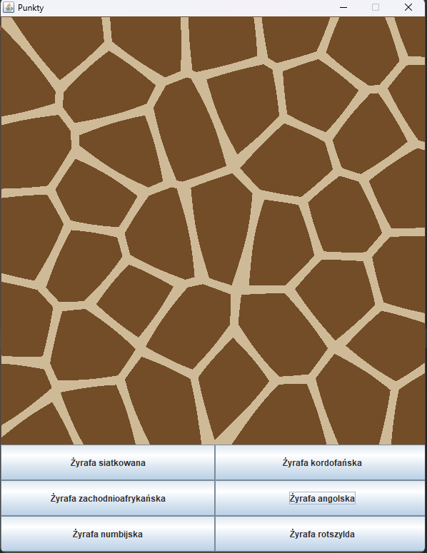
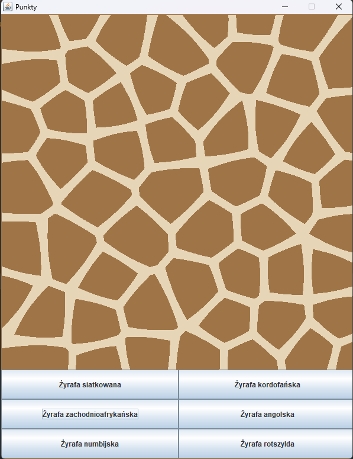
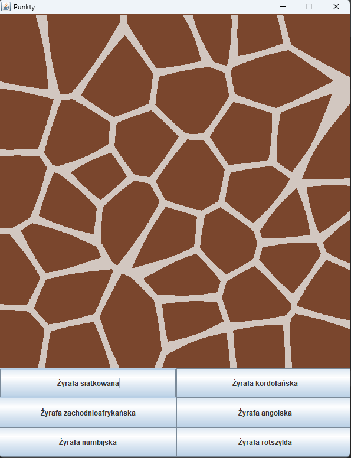
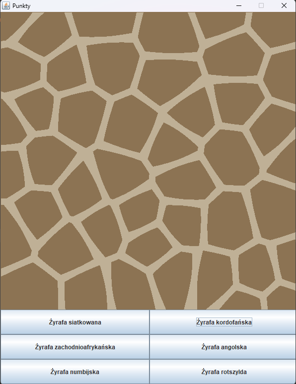
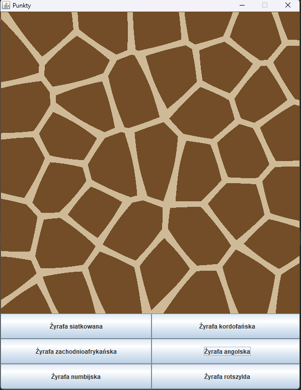
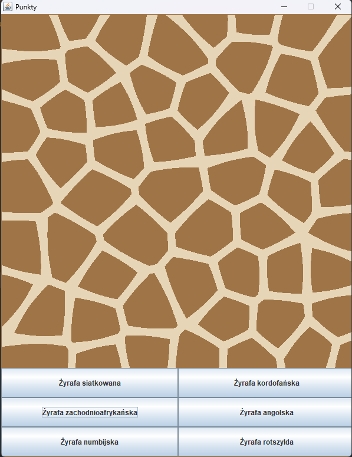
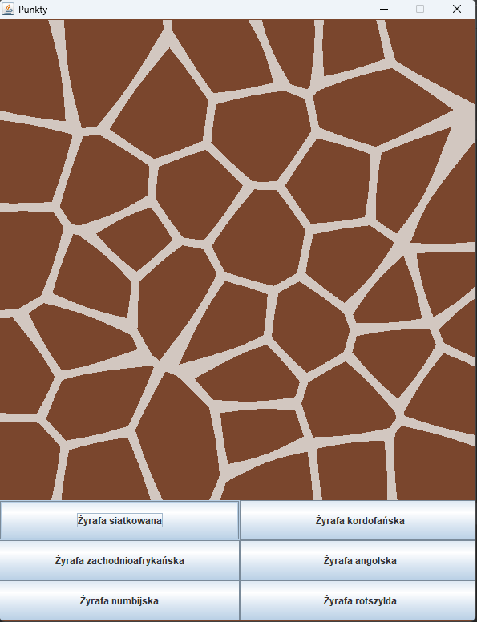
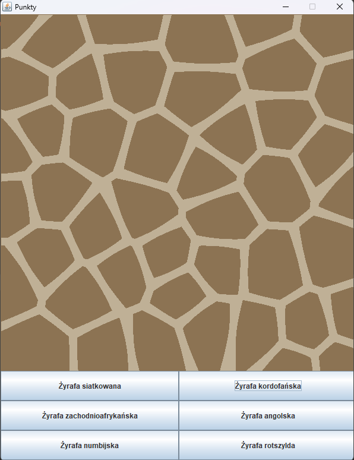

Giraffe
An application that generates random images with a giraffe pattern.
About the application
The "Giraffe" application allows users to generate random giraffe skin patterns using Voronoi Diagrams. The user selects one of six available species, and based on that selection, the application sets appropriate parameters related to the size and number of spots and color, then generates a unique giraffe skin pattern.
Technologies
The project uses this technology stack:
- Java
GitHub
Review the source code on GitHub
Source code on GitHubGallery
See how the application interface looks.
 







×